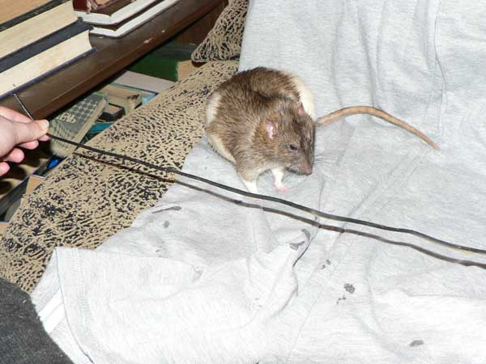

Февраль 2007
Потребовался для газеты "Русский марш" коллаж на тему Чубайса. Спросили у Цезаря, не согласится ли он попозировать. Сначала Цезарь отказался краситься в рыжий цвет, но мы ему объяснили, что для этого есть фотошоп. Он согласился. Мы держали провод, а он должен был его перегрызать.
— Ну, мне как-то даже неудобно провода прилюдно перегрызать...

— Не, я передумал. И провода грызть, да еще и Чубайса изображать!
— Ну ладно, понюхаю...

— А на вкус как?

— Хм... Я все же стесняюсь...

— Нет, и не уговаривайте, все, окончательно передумал! Честного крыса Чубайсом прдставлять!

— Ну ладно, но только так, чтобы морды лица не было видно!
— А как раз она нужна, говорите?
— Ну...

— Эх... Вот так пойдет?
А это — скан газеты:

Предупреждение: больше мы так делать никогда не будем, и никому больше не посоветуем. Во время позирования в Цезаря вселился дух Чубайса, да так малешко и осталось на потом. И стал он перегрызать перевода всеразличные: зарядки от мобильников, наушники, мыши компьютерные, кабели сетевые, а уж телефонных проводов от пяти метров и короче — бессчетно. Мы уже даже радионаушники купили и мышь беспроводную....